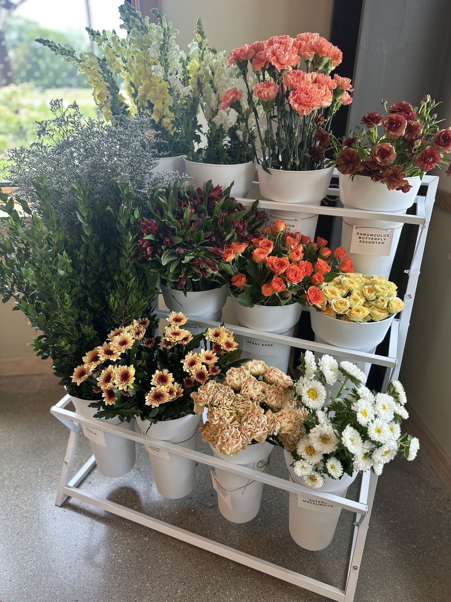

Caregiver Wellness Passport
Your Wellness. Your Journey. Your Pace.
When you’re caring for someone else, your own needs can easily take a back seat. Between daily responsibilities, appointments, and everything else that comes with caregiving, finding time for yourself isn’t always easy.
The Caregiver Wellness Passport was created to encourage family caregivers to make their own well-being a priority.
Through everyday wellness activities, Legacy programs, and community experiences, caregivers can explore different areas of wellness, earn points, and work toward meaningful milestones and rewards.
Because taking care of yourself matters, too.
Start Your Wellness Journey
How the Wellness Passport Works
The Wellness Passport makes it easier to explore wellness in ways that fit your life. Whether you’re participating from home, attending a Legacy program, or enjoying an experience with one of our community partners, every step is an opportunity to invest in yourself.
-
01 Explore Your Wellness
Discover seven wellness pillars and choose activities that support your interests, needs, and personal goals.
-
02 Earn Points
Complete and log wellness activities to earn 10 points per activity. Your points add up as you continue participating.
-
03 Reach Milestones
Earn points across different wellness pillars to reach milestones, celebrate your progress, and unlock wellness rewards.
Activities can be completed independently at home, through Legacy programs, or with participating community partners. You can move through the Passport at your own pace.
Discover Your Seven Wellness Pillars
Wellness looks different for everyone. Our seven pillars encourage you to explore different ways of caring for your physical, emotional, and social well-being.
-
CONNECT
Find your people.
Build relationships, spend time with others, and create meaningful connections that help you feel supported.
-
RESTORE
Make room to recharge.
Prioritize rest, relaxation, emotional wellness, and activities that help you feel renewed.
-
MOVE
Move in ways that work for you.
Support your physical wellness through movement, exercise, stretching, or activities you enjoy.
-
NOURISH
Give your body what it needs.
Explore nutrition, hydration, and healthy habits that support your overall well-being.
-
EXPLORE
Try something new.
Make time for creativity, hobbies, new experiences, and activities that bring you joy.
-
LEARN
Keep discovering and growing.
Explore new knowledge, skills, and learning opportunities that support your personal growth.
-
PREPARE
Plan for your well-being.
Take meaningful steps toward planning, organizing, and preparing for your personal and family needs.
Your Wellness Journey, One Milestone at a Time
Every step you take toward your well-being deserves recognition.
As you complete activities and earn points across the seven wellness pillars, you’ll work toward four milestones designed to celebrate your progress and encourage you to keep going.
-
ROOTED
50 Points
Participate in activities across at least 3 wellness pillars.
Reward: Legacy Welcome Gift
-
GROWING
100 Points
Participate in activities across at least 4 wellness pillars.
Reward: Wellness Partner Reward
-
THRIVING
150 Points
Participate in activities across at least 6 wellness pillars.
Reward: Premium Wellness Experience
-
FLOURISHING
200 Points
Participate in activities across all 7 wellness pillars.
Reward: Eligibility to apply for a Wellness Grant
Each completed and logged activity earns 10 points. Points are cumulative, meaning your progress continues as you reach each milestone.
Wellness Grant eligibility is based on program requirements and available funding. Reaching the Flourishing milestone does not guarantee grant approval or funding.
It’s Time to Make Room for You
You spend so much time caring for others. Your well-being deserves that same attention.
Whether you’re taking your first step toward prioritizing yourself or looking for new ways to support your wellness, the Caregiver Wellness Passport is here to encourage you along the way.
Start your journey, explore what wellness means to you, and celebrate the progress you make.
Start Your Wellness Journey